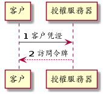

目标
-
理解认证「Authentication」与授权「Authorization」
-
理解 OAuth 协议
-
使用 Spring Cloud Security 实现 OAuth 认证与授权
-
在 API Gateway 实现认证
设计
认证与授权
身分验证（英语：Authentication）又穪「认证」、「鉴权」，是指通过一定的手段，完成对用户身分的确认。
身分验证的目的是确认当前所声穪为某种身分的用户，确实是所声穪的用户。在日常生活中，身分验证并不罕见；比如，通过检查对方的证件，我们一般可以确信对方的身分。虽然日常生活中的这种确认对方身分的做法也属于广义的「身分验证」，但「身分验证」一词更多地被用在电脑、通信等领域。
https://zh.wikipedia.org/wiki/身份认证
授权（英语：Authorization）一般是指对资讯安全或电脑安全相关的资源定义与授多存取权限，尤指存取控制。动词「授权」可指定义存取策略与接受存取。
https://zh.wikipedia.org/wiki/授权_(资安)
一次资源访问行为可描述为：某人对某物做某个行为。认证是验证某人为何人，而授权则验证某人可否对某物做某个行为。举个例子，类目管理员添加新的商品。当中，人为类目管理员，物为新的商品，行为为添加。认证阶段验证其人是否真为所宣穪的类目管理员，授权阶段则验证类目管理员是否有权添加新的商品。
架构
按照 OAuth 协议实现单点登入模式。 採用单点登入模式。採用 Cloud Foundry 的 UAA 实现认证与授权。在 Gateway处认证校验。各个服务再作具体的授权校验。

以 Catalog 服务为例，
OAuth
开放授权（OAuth）是一个开放标准，允许用户让第三方应用存取该用户在某一网站上储存的私密的资源（如相片，影片，联络人列表），而无需将用户名穪和密码提供给第三方应用。
OAuth 允许用户提供一个权仗，而不是用户名穪和密码来存取他们存放在特定服务提供者的资料。每一个权仗授权一个特定的网站（例如，影片编辑网站）在特定的时段（例如，接下来的2小时内）内存取特定的资源（例如仅仅是某一相簿中的影片）。这样，OAuth 让用户可以授权第三方网站存取他们储存在另外服务提供者的某些特定资讯，而非所有内容。
https://zh.wikipedia.org/wiki/开放授权

-
当用户使用第三方应用时，比如使用图片编辑应用访问在线相册中的相片，第三方应用需从资源服务器处访问资源；
-
资源服务器会要求授权。完整应该是要求先认证再授权。但对任何请求，如果没有声明身分则都被视为匿名用户「Anonynous」；
-
第三方应用像资源所有者即用户请求认证；
-
资源所有者将自已的身分凭证，如密码等，交给第三方应用；
-
第三方应用将资源所有者的身分凭证及资源请求一同提交给资源服务；
-
资源服务器校验身分凭证；
-
资源服务器按照身分授于相应的权限；
-
资源服务器确认第三方应用具有相应的权限后，返回资源。
该机制的缺点很明显，资源所有者必须将身分凭证交由第三方应用。第三方应用有意滥用或无意泄露都会使资源用者所有的资源都受到非法访问。
而 OAuth 避免了第三方应用接触到资源所有者身分凭证。
OAuth 定义了四种⻆色：
- 资源所有者「resource owner」
-
一个有能力授予受保护资源访问的实体。当资源所有者为人时，其指代最终用户。
- 资源服务器「resource server」
-
持有受保护资源的服务器，有能力接受和响应用带有访问令牌的受保护资源请求。
- 客户「client」
-
代资源所有者执行受保护资源请求与授权的应用。"客户"一词没有指定任何特定的实现特征（比如，无论该应用是运行在服务器、桌面或其它设备上）。
- 授权服务器「authorization server」
-
在成功认证资源所有者及获取授权后签发访问令牌的服务器。
一个典型的 OAuth 认证授权过程如下：
-
客户向资源所有者请求授权。该授权请求可以是直接发给资源所有者，也可以经由授权服务器中转。
-
客户收到授权补助。该授权补助内容取决于所选用的授权凭证类型。OAuth2 定义了四种授权补助类型。
-
客户向授权服务器提交授权补助以换取访问令牌。
-
授权服务器认证客户，校验授权补助，如有效则颁发访问令牌。
-
客户访问受保护资源，并同时向资源服务器出示访问令牌。
-
资源服务器校验访问令牌，若有效则响应受保护的资源。
OAuth2 定义了四种授权补助类型：Authorization Code, Implicit, Resource Owner Password Credentials 和 Client Credentials.
- Authorization Code
-
该类型将授权服务器作为客户与资源所有者之间的媒介。不同于从资源所有者直接请求授权，客户将资源所有者导向授权服务器，授权服务器再将资源所有者导回客户同时带上授权补助。
 Figure 4. Authorization Code
Figure 4. Authorization Code-
客户开始这个流程，将资源所有者的用户代理导向授权服务器。客户提供客户标识、请求范围、本地状态和重定向URI，授权服务器会在访问被允许时攴回这些信息给用户代理。
-
资源所有者将自己的身分凭证提交给用户代理。
-
用户代理将身分凭证连同客户标识及重定向URI一起提交给用授权服务器。
-
授权服务器校验客户标识、重定URI及资源所有者身分凭证，若通过则返回授权码给用户代理。
-
用户代理将授权码交给客户。
-
客户向授权服务器提交授权、重定向URI及客户标识。
-
授权服务器将访问令牌发送给客户所提供的重定向URI。
-
在这个认证授权过程中，客户自始至终都没有接触到资源所有者身分凭证，确保了资源所有者的身分凭证不会被客户滥用或泄露。授权服务器将访问令牌发送给合法的重定向URI而非在HTTP响应中返回，阻止了攻击者冒充客户。
- Implicit
-
该类型是为运行于浏覧器的客户而优化的简版 Authorization Code 流程。在此流程中，不再颁发授权码给客户，而是直接颁发访问令牌给客户。
 Figure 5. Implicit
Figure 5. Implicit-
客户开始这个流程，将资源所有者的用户代理导向授权服务器。客户提供客户标识、请求范围、本地状态和重定向URI，授权服务器会在访问被允许时攴回这些信息给用户代理。
-
资源所有者将自己的身分凭证提交给用户代理。
-
用户代理将身分凭证连同客户标识及重定向URI一起提交给用授权服务器。
-
授权服务器将用户代理重定向至之前提供的URI，并将访问令牌以 fragment 的形式附加至 URI。
-
用户代理重定向至URI，该URI一般跟客户强绑定。
-
该URI返回一段可在浏覧器中执行的脚本，该脚本将从 URI 的 fragment 中解出访问令牌。
-
用户代理将访问令牌交给客户。
-
- Resource Owner Password Credentials
-
该类型直接使用资源所有者的密码凭证（如用户名和密码）获取访问令牌。应仅当资源所有者与客户之间高度信任的情况下使用此类型。
 Figure 6. Resource Owner Password Credentials
Figure 6. Resource Owner Password Credentials-
资源所有者将其身分凭证（一般是用户名和密码）提供给客户。
-
客户将资源使用者的身分凭证提交给授权服务器。
-
授权服务器将访问令牌返回给客户。
-
- Client Credentials
-
直接用客户凭证获取访问令牌。此方式类型应仅用于获取客户所拥有的受保资源的访问权限。
Figure 7. Client Credentials-
客户向授权服务器提交自己的凭证（client_id 和 client_secret）。
-
授权服务器校验客户凭证，若通过则返回访问令牌。
-
Access Token
当向资源服务器请求受保护资源时，有三种方式可以传送访问令牌「Access Token」。
- Authorization 请求头
-
当以 Authorization 请求头传送访问令牌时，应使用"Bearer"方案。例如
GET /resource HTTP/1.1 Host: server.example.com Authorization: Bearer mF_9.B5f-4.1JqM - Form-Econded 请求体
-
当以请求体的一部份传送访问令牌时，请求体的内容类型必须为
application/x-www-form-urlencoded。例如POST /resource HTTP/1.1 Host: server.example.com Content-Type: application/x-www-form-urlencoded access_token=mF_9.B5f-4.1JqM - URI 请求参数
-
访问令牌也可以以查询参数
access_token的形式被传送。例如GET /resource?access_token=mF_9.B5f-4.1JqM HTTP/1.1 Host: server.example.com
Spring Security
Spring Security 是一个强大的，高度可客制化的认证与访问控制框架。其是保护基于 Spring 的应用的事实上的标准。
Spring Security 是一个专注于为 Java 应用提供认证与授权的框架。与所有 Spring 项目一样，在发觉其是多么容易地被扩展以满足客户需求才能明白 Spring Security 真实的力量。
https://spring.io/projects/spring-security#overview
认证
认证的核心为接口 AuthenticationManager 及其实现 AuthenticationProvider。

AuthenticationManager 仅有一个方法 authenticate()，该只会做三件事：
-
若输入的凭证是有效的，则返回一个
Authentication对象； -
若输入的凭证是无效的，则抛出一个
AuthenticationException； -
若无法决定，则返回
null。
最常用的 AuthenticationManager 实现为 ProviderManager，其将认证工作委派给一串 AuthenticationProvider 实例。AuthenticationProvider 提供了两个方法 authenticate 和 supports。多个 AuthenticationProvider 以责任链模式串联在一起，输入的凭证将逐一经过 AuthenticationProvider。每个 AuthenticationProvider 先用 supports 判断是否支持校验该类型的凭证，若是则使用 authenticate 校验凭证，若否则交由下一个 AuthenticationProvider 处理。

ProviderManager 本身包含一个可选的上级 AuthenticationManager，通过其实现多级委派。有时应中受保护的资源被分为多个组，每组使用不同的 AuthenticationManager。当当前 AuthenticationManager 无法做出决定时则回退至上级 AuthenticationManager。
授权
授权的核心是 AccessDecisionManager。框架提供的三个实现类 AffirmativeBased, ConsensusBased, UnanimousBased 皆以责任链模式将访问决定委派给一串 AccessDecisionVoter。
- AffirmativeBased
-
若有一个及以上
AccessDecisonVoter同意则允许，若有一个及以上AccessDecisionVoter反对且无任何AccessDecisionVoter同意则拒绝。此为默认AccessDecisionManager。 - ConsensusBased
-
若表示同意的
AccessDecisionVoter大于表示反对的则允许，反之则拒绝。 - UnanimousBased
-
若所有
AccessDecisionVoter都同意则允许，否则拒绝。
AccessDecisionVoter 接受一个 authentication 和一个用 ConfigAttributes 装饰的受保护的 Object。Object 是完全通用的的其表示用户想要访问的资源（URL、方法等等）。ConfigAttributes 也是相当地通用，其表示访问 Object 所需要的权限（如拥有某些⻆色）。
Web Security
Java Servlet 定义了请求处理框架。客户端发送过来的请求先经过过泸器「Filter」链，再交由 Servlet 处理。Servlet 处理后的结果再反向经过过泸器链，最后再发回给客户端。

Spring MVC 实现了 Servlet DispatcherServlet，将请求导向 Controllers。Spring Security 将 FilterChainProxy 插入到过泸器链中。
Spring Cloud Security
Spring Cloud Security提供了一组原语，用于以最少的麻烦构建安全的应用程序和服务。可通过外部（或集中地）深度配置的声明式模型，可被用于实现包含协作，远程组件，一般还有集中式标识管理服务的大型系统。在 Cloud Foundry 等服务平台中使用其也非常容易。基于 Spring Boot 和 Spring Security OAuth2，我们可以快速地创建实现常见模式（如单点登录、令牌中继和令牌交换）的系统。
实现
UAA
User Account and Authentication (UAA) 是一个由 Cloud Foundry 开发并维护的，兼容 OAuth2 的授权服务器实现。UAA 的配置与使用不在本文的范围之内。请使用提供的 Dockerfile 构建 UAA Docker 镜像并运行之：
-
在命令行中，克隆包含 UAA Dockerfile 及本文适用的配置文件的 GitHub 仓库：
git clone git://github.com/rscai/microservices-uaa.git -
然后，进入至项目根目录：
cd microservices-uaa ls可以发现其包含了构建 Docker 镜像所需的 Dockerfile 及 UAA 配置文件：
Dockerfile READ.adoc host-manager.xml manager.xml server.xml tomcat-users.xml uaa.yml
-
构建 Docker 镜像：
docker build --tag uaa . -
创建 Docker 容器并运行（在容器内，UAA监听在端口8090。将其映射至宿主端口9103）：
docker run -p 9103:8090 --name=uaa uaa
为了方便，客户信息（OAuth2 中的客户）及测试用户信息都硬编码在 uaa.yml 中。
...
oauth:
user:
authorities:
- openid
- scim.me
- password.write
- scim.userids
- uaa.user
- approvals.me
- oauth.approvals
clients:
gateway: (1)
name: gateway (2)
secret: secret
authorized-grant-types: authorization_code (3)
scope: uaa.user,openid,profile,email,catalog.read,catalog.write,inventory.read,inventory.write,order.use,order.operate (4)
authorities: uaa.resource
redirect-uri: http://localhost:9101/login/oauth2/code/gateway (5)
service: (6)
name: service
secret: secret
authorized-grant-types: password
scope: uaa.user,openid,profile,email,catalog.read,catalog.write,inventory.read,inventory.write,order.use,order.operate
authorities: uaa.resource
scim:
groups:
email: Access your email address
catalog.read: Read catalog (7)
catalog.write: Write catalog
inventory.read: Read inventory
inventory.write: Write inventory
order.use: Create, submit, cancel and close owned order
order.operate: cancel, mark pay, start delivery and complete order
users:
- customer1|password|customer1@provider.com|first1|last1|uaa.user,profile,email,catalog.read,inventory.read,order.use (8)
- customer2|password|customer2@provider.com|first2|last2|uaa.user,profile,email,catalog.read,inventory.read,order.use
- catalog_ops|password|catalog_ops@provider.com|catalog|ops|uaa.user,profile,email,catalog.read,catalog.write
- inventory_ops|password|inventory_ops@provider.com|inventory|ops|uaa.user,profile,email,inventory.read,inventory.write
- order_ops|password|order_ops@provider.com|order|ops|uaa.user,profile,email,order.use,order.operate
- inventory_service|password|inventory_service@provider.com|inventory|service|uaa.user,profile,email,catalog.read
- order_service|password|order_service@provider.com|order|service|uaa.user,profile,email,catalog.read,inventory.read,inventory.write
...| 1 | 本例中的网关扮演着 OAuth2 客户的⻆色。所有的客户都需在授权服务器中注册。 |
| 2 | 客户名即标识和 secret 被用于认证客户的身份，其一定要与客户侧的一致。 |
| 3 | 注册网关仅使用 Authorization Code 类型的授权补助。 |
| 4 | 罗列作为客户的网关所可能申请的所有 Scope。 |
| 5 | 注册作为客户的网关的重定向URI。授权服务器会比对注册的重定URI和请求授权码时的重定向URI，若不匹配则拒绝颁发授权码。 |
| 6 | 注册另一个客户。一个授权服务器可服务多个客户。 |
| 7 | 定义 Scope，格式为 <Scope 名穪>:<描述>。UAA 的 Scope 对应为 Spring Security 的职权「Authority」。 |
| 8 | 注册用户，格式为 用户名|密码|电邮地址|名|姓|scope 列表（以逗号分隔）。 |
网关
网关要校验所有请求，若请求未认证则引导至 UAA 做认证与授权，若请求已认证则将访问令牌一同转发给后端服务。
首先，在 gateway 的 Gradle 构建文件中引入依赖。
...
dependencies {
implementation 'org.springframework.cloud:spring-cloud-starter-gateway'
implementation 'org.springframework.cloud:spring-cloud-starter-netflix-eureka-client'
implementation 'org.springframework.cloud:spring-cloud-starter-oauth2' (1)
implementation 'org.springframework.boot:spring-boot-starter-oauth2-client' (2)
testImplementation('org.springframework.boot:spring-boot-starter-test') {
exclude group: 'org.junit.vintage', module: 'junit-vintage-engine'
}
testImplementation 'org.junit.jupiter:junit-jupiter-api'
testRuntimeOnly 'org.junit.jupiter:junit-jupiter-engine'
}
...| 1 | spring-cloud-starter-oauth2 引入了依赖 org.springframework.cloud:spring-cloud-security 和 org.springframework.security.oauth.boot:spring-security-oauth2-autoconfigure。spring-cloud-security 提供一些用于集成 OAuth 与 Spring Cloud 组件如 Spring Cloud Gateway，Spring Cloud OpenFeign 的类。spring-security-oauth2-autoconfigure 顾名思义，其提供了 OAuth2 相关的自动配置。 |
| 2 | spring-boot-starter-oauth2-client 引入了 org.springframework.security:spring-security-oauth2-client 和 org.springframework.security:spring-security-oauth2-jose。 |
然后，通过 Java Config 类 SecurityConfig 配置 SecurityWebFilterChain。
package io.github.rscai.microservices.gateway;
import org.springframework.context.annotation.Bean;
import org.springframework.context.annotation.Configuration;
import org.springframework.security.config.web.server.ServerHttpSecurity;
import org.springframework.security.oauth2.client.registration.ReactiveClientRegistrationRepository;
import org.springframework.security.web.server.SecurityWebFilterChain;
@Configuration (1)
public class SecurityConfig {
@Bean
public SecurityWebFilterChain springSecurityFilterChain(ServerHttpSecurity http,
ReactiveClientRegistrationRepository clientRegistrationRepository) { (2)
// Authenticate through configured OpenID Provider
http.oauth2Login(); (3)
// Require authentication for all requests
http.authorizeExchange().anyExchange().authenticated(); (4)
// Disable CSRF in the gateway to prevent conflicts with proxied service CSRF
http.csrf().disable(); (5)
return http.build();
}
}| 1 | 使用注解 @Configuration 以声明此类为 Spring 配置类，Spring 会依此组装相应的 Bean； |
| 2 | 声明一个 SecurityWebFilterChain 类型的 Bean，Spring Security 会将其插入至 WebFlux 的过泸链中。 |
| 3 | 指明使用 OAuth2 认证机制； |
| 4 | 声明所有的请求都需经过认证； |
| 5 | 关闭 CSRF。跨站请求伪造（英语：Cross-site request forgery），也疲穪为 one-click attack 或者 session riding，通常缩写为 CSRF 或者 XSRF，是一种挟制用户在当前已登入的 Web 应用程式上执行非本意的操作的攻击方法。 |
最后，通过 application YAML 配置 Spring Security。
...
security:
oauth2:
client:
registration:
gateway: (1)
provider: uaa (2)
client-id: gateway (3)
client-secret: secret (4)
authorization-grant-type: authorization_code (5)
redirect-uri: "http://localhost:9101/login/oauth2/code/{registrationId}" (6)
scope: uaa.user,openid,profile,email,catalog.read,catalog.write,inventory.read,inventory.write,order.use,order.operate (7)
provider:
uaa: (8)
authorization-uri: http://localhost:9103/uaa/oauth/authorize (9)
token-uri: http://localhost:9103/uaa/oauth/token (10)
user-info-uri: http://localhost:9103/uaa/userinfo (11)
user-name-attribute: sub
jwk-set-uri: http://localhost:9103/uaa/token_keys (12)
...| 1 | 网关在 OAuth 协议中扮演着 client 的⻆色，所以要定义 client 相关的属性； |
| 2 | provider 指 authorization server，本例中使用 UAA 实现 authorization server，其具体信息将在独立章节中定义； |
| 3 | client 的标识，需与 UAA 中的配置匹配； |
| 4 | client 的密钥，用作 client 的身分凭证，需与 UAA 中的配置匹配； |
| 5 | OAuth2 定义了四种获取访问令牌的方式：Authorization Code, Implicit, Resource Owner Password Credentials 及 Client Credentials。本例使用 Authorization Code 型的 Authorization Grant。 |
| 6 | 当资源所有者在 UAA 完成了认证与授权之后，UAA 将会把授权码传送到这个URI。 |
| 7 | Gateway 作为客户所可能申请的所有 Scope，Scope 对应 Spring Security 中的 Authority。比如，Scope catalog.read 对应 Spring Security 中的 Authority SCOPE_catalog.read。 |
| 8 | 接着描述授权服务器 uaa。 |
| 9 | 当网关发现访问受保护资源的请求未授权时，则会重定向用户代理（一般是浏覧器）至 authorization-uri，以认证资源所有者凭证并要求授权。 |
| 10 | 当作为客户的网关得到授权码之后，则会访问 token-uri 从授权服务器获取访问令牌。 |
| 11 | 作为客户的网关得到访问令牌之后，可以访问 user-info-uri 从授权服务器获取资源所有者的其它信息。 |
| 12 | 当作为用户的网关得到访问令牌后，应使用相应的公钥校验令牌签名以确定其是合法的。 |
资源服务器
资源服务器需要校验访问令牌，再检验访问令牌是否包含具体资源的授权。
以 Catalog 服务为例，首先引入依赖。
...
dependencies {
asciidoctor 'org.springframework.restdocs:spring-restdocs-asciidoctor'
implementation 'org.springframework.boot:spring-boot-starter-data-mongodb'
implementation 'org.springframework.boot:spring-boot-starter-web'
implementation 'org.springframework.boot:spring-boot-starter-data-rest'
implementation 'org.springframework.boot:spring-boot-starter-actuator'
implementation 'org.springframework.cloud:spring-cloud-starter-netflix-eureka-client'
implementation 'org.springframework.boot:spring-boot-starter-security' (1)
implementation 'org.springframework.security:spring-security-oauth2-resource-server' (2)
implementation 'org.springframework.security:spring-security-oauth2-jose' (3)
testImplementation 'org.springframework.boot:spring-boot-starter-test'
testImplementation 'org.springframework.restdocs:spring-restdocs-mockmvc'
testImplementation 'de.flapdoodle.embed:de.flapdoodle.embed.mongo'
testImplementation 'org.springframework.security:spring-security-test' (4)
}
...| 1 | spring-boot-starter-security 引入了 org.springframework.security:spring-security-web、org.springframework.security:spring-security-core 和 org.springframework.security:spring-security-config，其包含了 Spring Security 基础的类及跟 Web 应用集成所需的工具类。 |
| 2 | spring-security-oauth2-resource-server 提供了资源服务器所需的实现。 |
| 3 | spring-security-oauth2-jose 提供了对 JWT 令牌的支持。 |
| 4 | spring-security-test 提供测试工具，比如模拟认证用户等。 |
然后，以 Java Config 形式配置 Spring Security。
@Profile("!test") (1)
@EnableWebSecurity (2)
@EnableGlobalMethodSecurity(securedEnabled = true, prePostEnabled = true) (3)
public class SecurityConfig extends WebSecurityConfigurerAdapter { (4)
@Override
protected void configure(HttpSecurity http) throws Exception {
http
.csrf().disable() (5)
.authorizeRequests() (6)
.anyRequest().authenticated() (7)
.and()
.oauth2ResourceServer() (8)
.jwt(); (9)
}
}| 1 | 利用 Spring Boot 的 Profile 特性，在测试场景中不启用安全配置但在其它场景中启用。 |
| 2 | 使用注解 @EnableWebSecurity 启用安全机制。 |
| 3 | 使用注解 @EnableGlobalMethodSecurity 启用方法层级的安全机制，本服务採用 Spring Data REST 构建 RESTFul 服务，所以在 Repository 方法声明访问控制是最合理的。 |
| 4 | 继承 org.springframework.security.config.annotation.web.configuration.WebSecurityConfigurerAdapter 并覆写方法 configure(HttpSecurity http) 以配置安全措施。 |
| 5 | 关闭 CSRF。 |
| 6 | 安全措施作用于所有请求。 |
| 7 | 所有请求首先必需是认证过的。 |
| 8 | 本服务採用 OAuth2 协议且扮演资源服务器的⻆色。 |
| 9 | 採用 JWT 类型的令牌。 |
最后，在 Repository 的方法上声明所需的权限。
@PreAuthorize("hasAuthority('SCOPE_catalog.read')") (1)
@RepositoryRestResource(collectionResourceRel = "products", path = "products")
public interface ProductRepository extends MongoRepository<Product, String> {
String AUTHORITY_CATALOG_WRITE = "hasAuthority('SCOPE_catalog.write')";
@PreAuthorize(AUTHORITY_CATALOG_WRITE) (2)
@Override
<S extends Product> S save(S entity);
@PreAuthorize(AUTHORITY_CATALOG_WRITE)
@Override
<S extends Product> List<S> saveAll(Iterable<S> entities);
@PreAuthorize(AUTHORITY_CATALOG_WRITE)
@Override
void delete(Product entity);
@PreAuthorize(AUTHORITY_CATALOG_WRITE)
@Override
void deleteAll();
@PreAuthorize(AUTHORITY_CATALOG_WRITE)
@Override
void deleteAll(Iterable<? extends Product> entities);
@PreAuthorize(AUTHORITY_CATALOG_WRITE)
@Override
void deleteById(String s);
}| 1 | 使用注解 @PreAuthorize 以 Spring-EL 声明必需的权限。@PreAuthorize 可以作用于方法也可作用于整个类。当作用于整个类时，等同于作用于该类所有的方法。 |
| 2 | @PreAuthorize 作用于方法，是在类级的 @PreAuthorize 的基础上再附加权限要求。比如，要调用方法`save(S entity)，请求者必须满足 `hasAuthority('SCOPE_catalog.read') 和 hasAuthority('SCOPE_catalog.write')。 |
Spring 表逹式语言（缩写为"SpEL"）是一种强大的，支持运行时查询和编辑对象图的表逹式语言。该语言的语法与 Unified EL 相似但其提供了更多的特性，特殊方法调用和基本的字符串模板化功能。
https://docs.spring.io/spring/docs/current/spring-framework-reference/core.html#expressions
Spring Security 内建一些表逹式，以方便应用开发者检验以 Authentication 对象形式展现的认证与授权信息。
| 表逹式 | 描述 |
|---|---|
hasRole(String role) |
若当前本人拥有该⻆色则返回 |
hasAnyRole(String… roles) |
若当前本人拥有任一⻆色则返回 |
hasAuthority(String authority) |
若当前本人拥有该职权则返回 |
hasAnyAuthority(String… authorities) |
若当前本人拥有任一⻆色则返回 |
principal |
直接访问当前本人对象。 |
authentication |
直接访问当前 |
permitAll |
永远为 |
denyAll |
永远为 |
isAnonymous() |
若当前本人是匿名用户则返回 |
isRememberMe() |
若当前本人是 remember-me 用户则返回 |
isAuthenticated() |
若当前本人为非匿名用户则返回 |
isFullyAuthenticated() |
若前前本人非匿名且非 remember-me 则返回 |
hasPermission(Object target, Object permission) |
若该用户拥有某对象的某许可则返回 |
hasPermission(Object targetId, String targetType, Object permission) |
若该用户拥有某对象的某许可则返回 |
测试
API 测试
包括安全的 API 测试跟普通的 API 测试相似，仅增加了认证用户的模拟。
以 Product 的 API 为例，
@ActiveProfiles("test") (1)
@Import(RestDocsMockMvcConfiguration.class)
@RunWith(SpringRunner.class)
@SpringBootTest(classes = CatalogApplication.class)
@AutoConfigureMockMvc(addFilters = false) (2)
@AutoConfigureRestDocs
public class ProductTest {
private static final String ENDPOINT = "/products";
private static final String SCOPE_CATALOG_READ = "SCOPE_catalog.read";
private static final String SCOPE_CATALOG_WRITE = "SCOPE_catalog.write";
@Autowired
private MockMvc mvc;
@Autowired
private ObjectMapper objectMapper;
@Autowired
private ProductImageRepository imageRepository;
@Autowired
private ProductRepository productRepository;
...
@Test
@WithMockUser(username = "catalog_ops", authorities = {SCOPE_CATALOG_READ, SCOPE_CATALOG_WRITE}) (3)
public void testCreateAndGet() throws Exception {
final String imageALink = obtainLinkOfImage(imageAId);
final String imageBLink = obtainLinkOfImage(imageBId);
final String title = "New Product";
final String ELECTRONICS = "Electronics";
final String MOBILE = "Mobile";
String createResponse = mvc.perform(
post(ENDPOINT).accept(MediaType.APPLICATION_JSON).contentType(MediaType.APPLICATION_JSON)
.content(String.format(
"{\"title\":\"%s\",\"tags\":[\"%s\",\"%s\"],\"images\":[\"%s\",\"%s\"]}",
title, ELECTRONICS, MOBILE, imageALink, imageBLink)))
.andDo(print())
.andExpect(status().isCreated())
.andExpect(jsonPath("$.title", is(title)))
.andExpect(jsonPath("$.createdAt", notNullValue()))
.andExpect(jsonPath("$.updatedAt", notNullValue()))
.andExpect(jsonPath("$._links.images", notNullValue()))
.andDo(document("product/create", links(), requestFields(
fieldWithPath("images").type(JsonFieldType.ARRAY)
.description("links of referred ProductImage")), responseFields()))
.andReturn().getResponse().getContentAsString();
String productId = Stream
.of(objectMapper.readTree(createResponse).at("/_links/self/href").asText().split("/"))
.reduce((first, second) -> second).orElse(null);
mvc.perform(get(ENDPOINT + "/{id}", productId).accept(MediaType.APPLICATION_JSON))
.andExpect(status().isOk())
.andExpect(jsonPath("$.title", is(title)))
.andExpect(jsonPath("$.createdAt", notNullValue()))
.andExpect(jsonPath("$.updatedAt", notNullValue()))
.andExpect(jsonPath("$._links.images", notNullValue()))
.andDo(document("product/getOne", links(),
pathParameters(parameterWithName("id").description("catalog's id")), responseFields()));
mvc.perform(get(ENDPOINT + "/{id}/images", productId).accept(MediaType.APPLICATION_JSON))
.andExpect(status().isOk())
.andExpect(jsonPath("$._embedded.productImages", hasSize(2)))
.andDo(document("product/getImages",
pathParameters(parameterWithName("id").description("catalog's id"))));
}
...| 1 | 显式激活 profile test。还记我们声明安全配置 SecurityConfg 祗在非 test profile 时才激活么？安全配置 SecurityConfig 显示指名採用 OAuth2 协议，但模拟兼容 OAuth2 的授权服务器太困难了，所以我们选择在测试中不集成 OAuth2，而是模拟认证用户即 Authentication 对象。 |
| 2 | addFilters = false 是在测试中停用安全配置的必要步骤。Spring Security 是以向过泸器链中插入自己的过泸器的方式与 Spring MVC 应用集成的，且一但相关的类出现在 classpath 中就会触发 Spring Security 自动配置。所以，必需要在测试中排除过泸器。 |
| 3 | 使用注解 @WithMockUser 在测试方法范围内模拟认证用户即 Authentication 对象。通过 @WithMockUser 可以模拟用户名、⻆色、职权和口令。
Figure 14. WithMockUser.java
|
端到端测试
将 UAA、Catalog 服务、Eureka 和网关全都运行在同一个环境，执行端到端的测试。
首先，创建并启动 UAA Docker 容器；
docker run -p 9103:8090 --name=uaa uaa或启动已创建的 UAA Docker 容器：
docker start uaa然后，启动 Eureka；
cd microservices-eureka
./gradlew bootRun -Dspring.profiles.active=dev再然后，创建并启动 MongoDB Docker 容器；
docker run -d --name catalog-mongo -p 27018:27017 -v <LOCAL PATH>/catalog-mongo-data:/data/db -e MONGO_INITDB_ROOT_USERNAME=mongoadmin -e MONGO_INITDB_ROOT_PASSWORD=secret mongo:3.4或启动已创建的 MongoDB Docker 容器；
docker start catalog-mongo再然后，启动 Catalog 服务；
cd microservices-cata
./gradlew bootRun -Dspring.profiles.active=dev最后，打开浏覧器访问 http://localhost:9101/catalog/products。其会重定向至 UAA，输入用户名密码并确认授权。最终应能得到 HAL 格式的响应。
观察 HTTP 报文可以发现，
-
浏覧器向网关发送 GET /catalog/products 请求；
-
网关发觉当前会话未认证，所以重定向浏覧器至自身的认证URI；
-
浏覧器访问网关的认证URI；
-
网关根据自身配置，将浏覧器重定向至 UAA 进行认证；
-
浏覧器访问 UAA 的认证 URI；
-
UAA 根据授权补助类型 Authorization Code，重定向浏覧器至用户登入页面，引导用户以用户名密码认证；
-
浏覧器访问用户登入页面；
-
浏覧器将用户提供的用户名密码发送给 UAA；
-
UAA 认证用户名密码通过以后，重定向浏覧器至授权确认页面；
-
浏覧器访问授权确认页面；
-
浏覧器将用户的授权确定发送给 UAA；
-
UAA 以重定向回网关的形式将授权码返回；
-
浏覧器以包含授权码的URI访问网关认URI；
-
网关得到授权码后，向 UAA 申请访问令牌；
-
UAA 返回访问令牌、刷新令牌及其它信息；
-
网关向 UAA 请求公钥以校验今牌的签名；
-
UAA 返回校验令牌签名用的公钥；
-
网关向 UAA 请求用户信息；
-
UAA 返回用户名、电邮地址等用户信息；
-
网关将令牌存于当前会话中，返回浏覧器会话标识，并重定向浏覧器至最初的URL；
-
浏覧器访问最初的URL，并在Cookie中提供会话标识；
-
网关从服务注册处发现 Catalog 服务实例，将请求转发给其，并将从会话中恢复的访问令牌以
Authorization头的形式附上； -
Catalog 服务从 UAA 处请求公钥以校验访问令牌的签名；
-
UAA 返回公钥给 Catalog 服务；
-
Catalog 服务校验过访问令牌及其包含的职权后，返回受保护的资源给网关；
-
网关把 Catalog 服务的响应转发给浏覧器。
总结
本章我们了解了认证与授权，OAuth2 协议；使用 Spring Cloud Security 在网关上实现单点登入模式；使用 Spring Security 实现服务端鋻权。